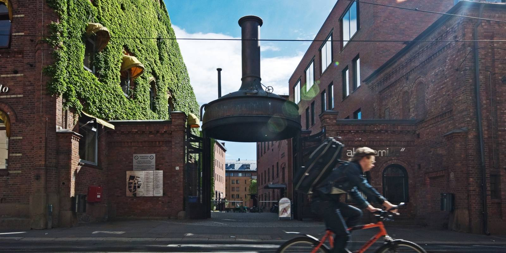
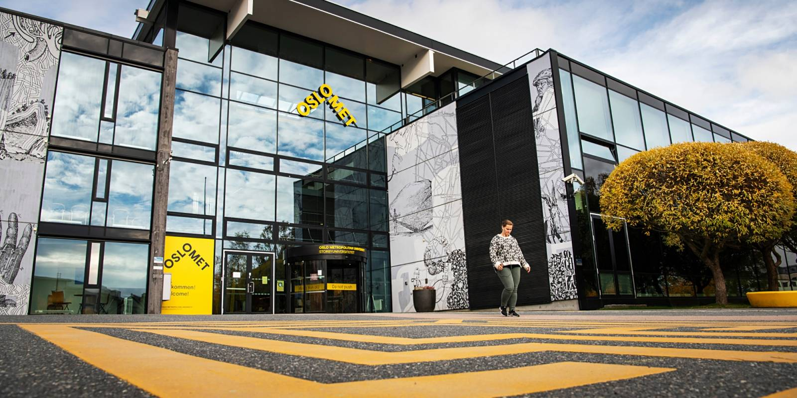

Photo: Oslomet.no
Pilestredet Campus
Oslomets' largest campus is located in the heart of Oslo. It is the most urban university campus of Oslo. Address: Pilestredet 32-54.

Photo: Oslomet.no
Kjeller Campus
OsloMet's other campus lies outside of Oslo in Romerike. Address: Kunnskapsveien 55.

Photo: Freepik.com / @fabrikasimf
Cantine Oslo campus
There are several cantines in the Oslo campus. We have both prepared warm food, beverages, coffee and a lot more. Read more here and find your faculties' closest cantine.

Photo: Freepik.com / @drobotdean
Student unions
There are several student unions to join at Oslomet. If you like gaming, knitting, sports or any other activity - you are guaranteed to find a student union for you.